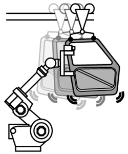
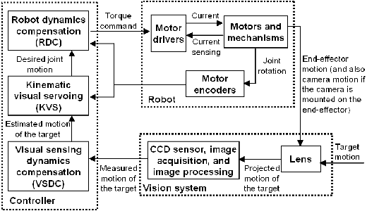

Kinematic Visual Servoing
Motivation and Approach
Currently, in most applications of vision guided industrial manipulators, the workpiece is either stationary (e.g., bin picking) or in simple motion (e.g., picking from a conveyor belt). In such applications, a simple look-then-move control strategy gives good performance. There are, however, desirable applications in which the workpieces are in more complex motion. Guiding the robot to approach and track a moving target based on vision feedback is o en termed as visual servoing. Compared to conventional tasks (e.g. welding and palletizing) where reference trajectory is known in advance, the motion of the robot is planned in real-time.
|  |  |
- Rather than the look-then-move scheme, a real-time vision guidance control algorithm is desired.
- Most industrial robots in use are controlled by trajectory tracking control algorithms. In order to improve usability for the end user, the conventional trajectory tracking control algorithm should be preserved and the vision guidance control algorithm should be designed to be an add-on.
- In order to apply to real-world industrial robots, the limited sampling speed of the vision system and the limited dynamics response of the actuators should be fully considered.
Main Results
- Based on the compensated vision feedback from the visual sensing dynamics compensation (VSDC) algorithm, a two-layer control strategy [1] consisting of kinematic visual servoing (KVS) and robot dynamics compensation (RDC) is developed using the theory of multi-surface sliding control. The KVS control law acts as an online motion planner, whereas the RDC control law preserves the structure of a conventional trajectory tracking controller.
- Constrained optimal control is applied to address the limited dynamics capability of the robot.

Recent Key Publications
- C. Wang, C.-Y. Lin, and M. Tomizuka, "Visual Servoing Considering Sensing Dynamics and Robot Dynamics," in Proceedings of the 6th IFAC Symposium on Mechatronic Systems, pp. 45-52, 2013 (Best Student Paper Finalist)
- C. Wang, C.-Y. Lin, and M. Tomizuka, "Visual Servoing for Robot Manipulators Considering Sensing and Dynamics Limits," in Proceedings of the Sixth ASME Dynamic Systems and Control Conference (DSCC), 2013